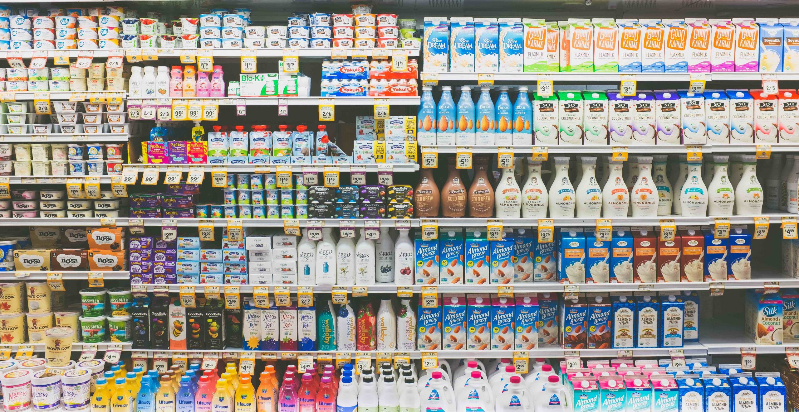

Todo lo que necesitas, ¡al alcance de un clic!
Explorar productos
Nuestra Historia
"FrescoMarket nació con la misión de llevar frescura y calidad a la mesa de cada familia.
Desde nuestros inicios, nos hemos comprometido con la excelencia y la confianza de nuestros clientes."
Misión y Visión
"Proveer productos de calidad que mejoren la vida diaria de nuestros clientes.
Ser el supermercado en línea líder en frescura y servicio."

Busca lo que necesites
Cargando...